Astra · A / B / C · 6 native room views + 3 dimensioned plans
Astra bedroom designs.
All three designs now have softly draped bedding, detailed furniture and natural interior framing. The measured room, furniture sizes and positions, and perpendicular rug orientation remain fixed. Open each plan to inspect dimensions and clearances.
A/B use the requested nominal king frame envelope of 2,000 × 2,150 mm; actual Gregory/Seymour outer sizes are unconfirmed. C uses its published 1,905 × 2,146.3 mm exterior. All three contain the specified 1,828.8 × 1,981.2 × 50 mm mattress on continuous flat support. These are path-traced renderings of the dimension-controlled model; detailed product forms and surface patterns remain illustrative. Measurement basis and assumptions ↓
Direction A · a considered revision
Walnut & Rust Atelier
Walnut, cane and ivory, with a small rust accent that connects the art to the reading corner.
Layout & dimensions
The rug’s long edge runs across the room at 90° to the wardrobe front. The bed, rug, artwork, TV and console share one centre line. Bedside gaps are 100 mm on both sides.
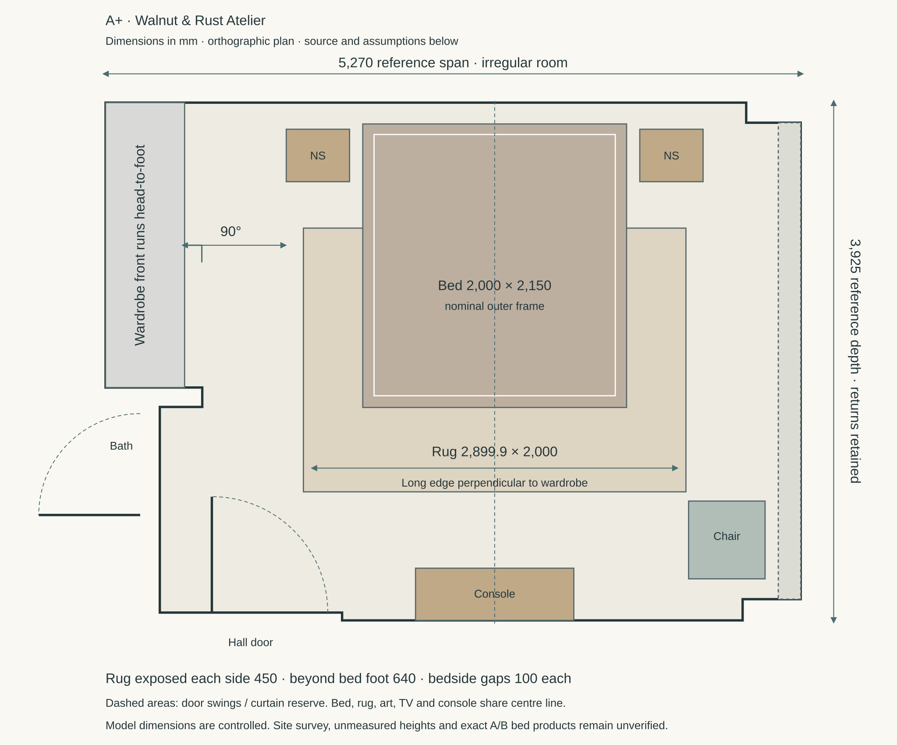
Rug exposure: 450 mm each side and 640 mm beyond the bed foot. Bed-foot to console: 1,219 mm.
| Item | Size | Basis / alignment |
|---|---|---|
| Rug · long edge across room | 2,899.9 × 2,000 mm | Perpendicular to wardrobe front |
| Bed · outer width × length × height | 2,000 × 2,150 × 1,000 mm | A/B nominal planning envelope; height assumed |
| Mattress | 1,828.8 × 1,981.2 × 50 mm | 50 mm thick; continuous flat support modelled |
| Each bedside | 480 × 398 × 595 mm | 100 mm gap from bed on each side |
| Reading chair | 580 × 590 × 790 mm | Faces bed; footprint stays square to walls |
| Console | 1,200 × 396 × 463 mm | Centred with bed and TV |
| TV · body width × depth × height | 1,668.1 × 77 × 957.8 mm | 75-inch Samsung; mounting elevation assumed |
| Artwork · width × height | 700 × 700 mm | Selected size; external frame detail unverified |
| Mirror · width × height | 600 × 900 mm | Orientation and projection assumed |
The native plan is irregular: 5,270 × 3,925 mm are reference spans, not a clear rectangular room. Door sweeps, wardrobe depth and window piers are retained. These views preserve the measured layout and furniture outer sizes; detailed product shapes, materials and bedding are illustrative. The bed-facing image is framed from inside the room. Use the plan to see the complete layout.
Read the measurement basis and assumptions · Download model dimensions (JSON)
Compare with the dimension-controlled technical views
The room, furniture outer sizes and placement are the same. The new views add cloth and furniture detail and use interior framing. These earlier technical views retain the full-layout cutaway; plans and dimension tables are unchanged.
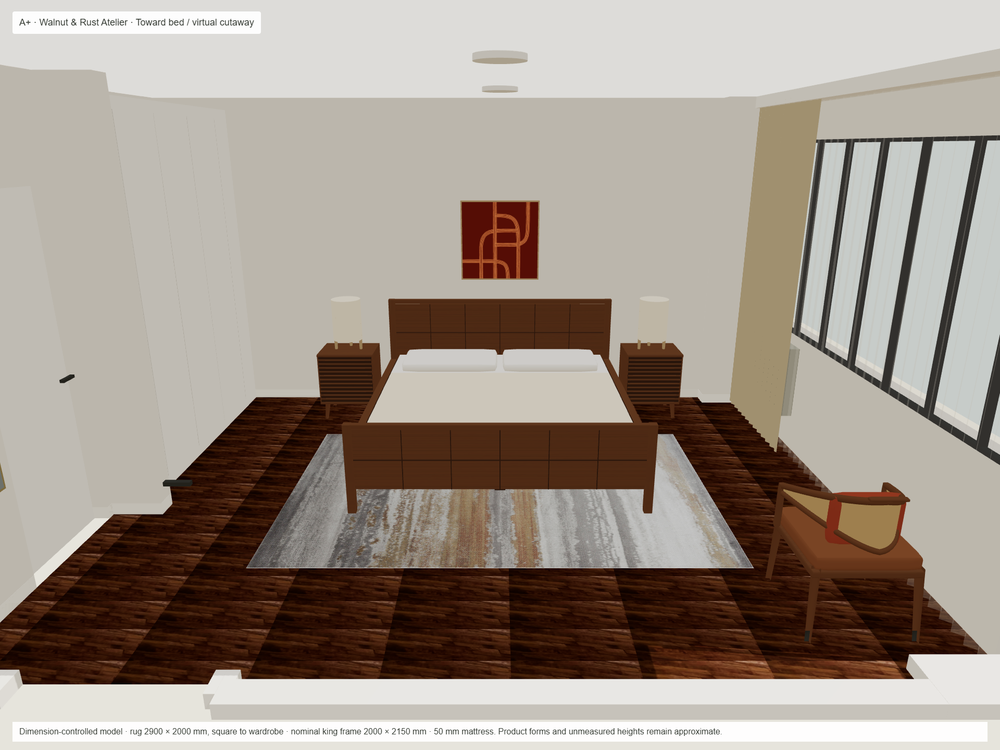
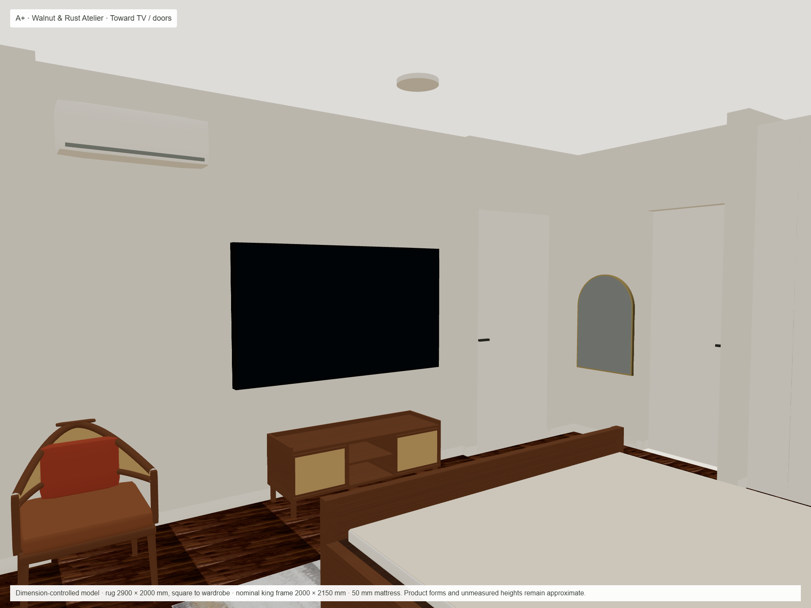
Previous A/B/C concept renders · approximate proportions
Earlier decorative concept images are preserved for style comparison. Use the model and dimensioned plan above for layout.
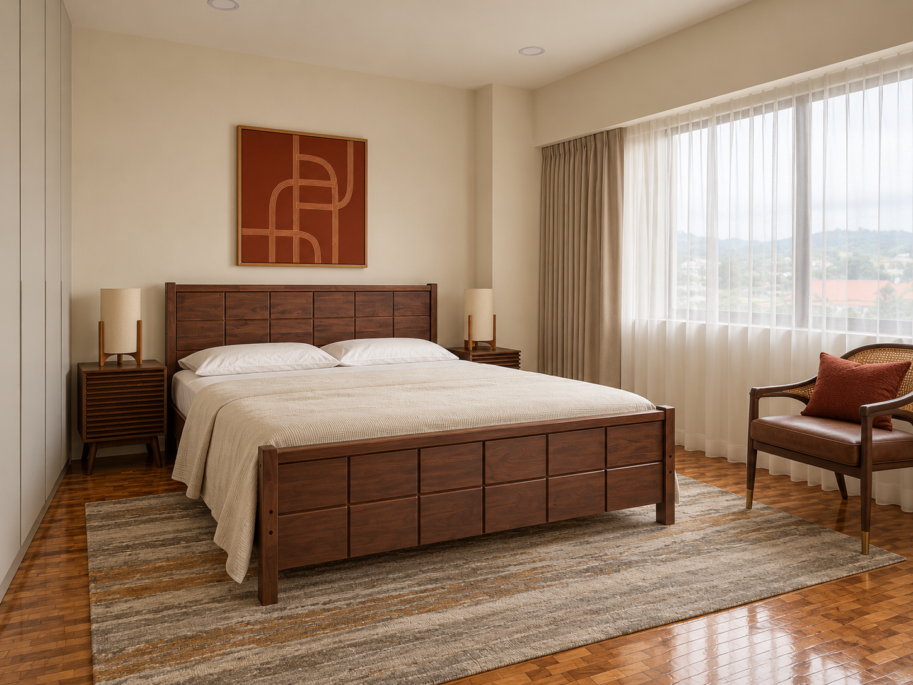
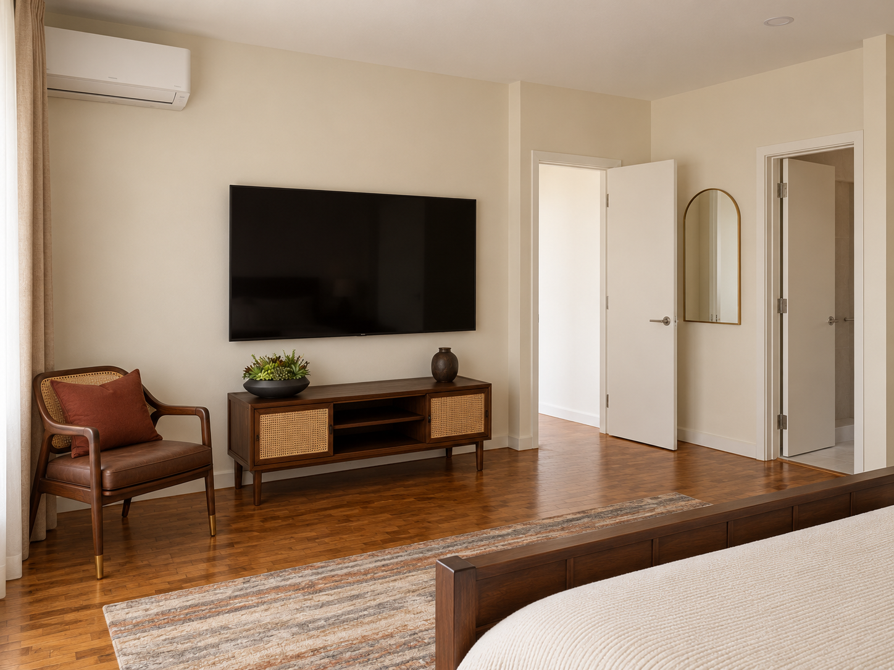
New textile colour and texture remain provisional: the added/replacement textile source photographs were not available for visual verification.
What changes
- Retain Gregory, Haru, Yago, Helena and the Brugge console; keep the timber and cane visibly distinct.
- Add one red-brown DYTÅG linen cushion to Helena. Lightly fold INDIRA and relax the two sleeping pillows.
- Keep Branch03 at 70 × 70 cm and Arendal at 60 × 90 cm; retain the installed ceiling fittings.
The palette
- Walnut
- Rust
- Warm ivory
- Cognac & cane
Includes dated baseline items, carried curtains and new textiles; exact insert articles remain provisional where noted. Reserves are inherited estimates, not fresh quotations. See every item and price date ↗
Compare with the original A
Walnut, Rust and Woven Light. These original images were rejected and are retained here only to show the starting point.
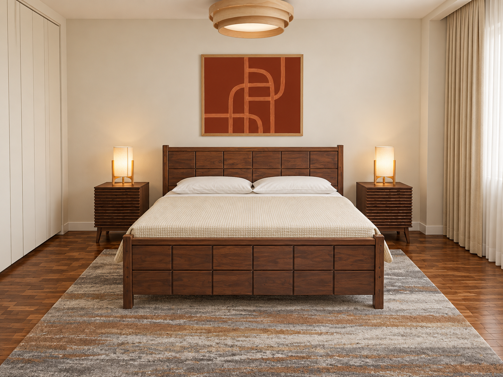
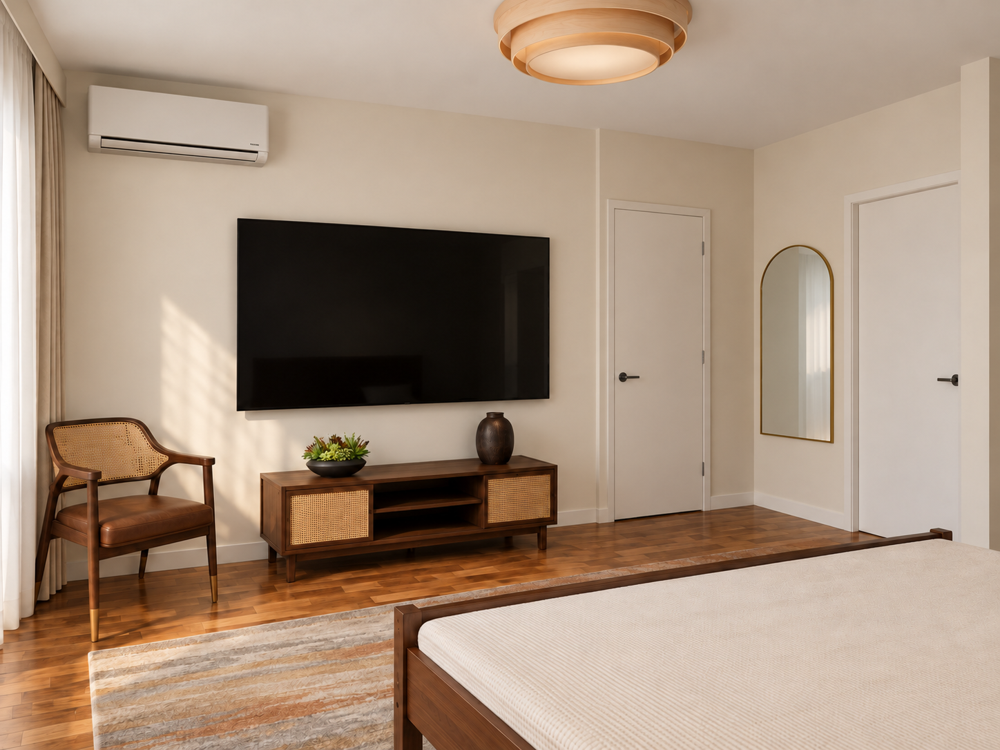
Products & source references
The revised schedule retains the original furniture, removes new ceiling fixtures and adjusts the textiles. The original supplier board shows the starting selections, including superseded ceiling fixtures and B’s previous bedspread.
- DYTAG cushion cover, red-brown, 50x50 cm ↗Official-page price checked 21 October 2026; photo unavailable, colour/texture provisional, Cebu fulfillment unverified.
Direction B · a considered revision
Sage & Soft Oak Retreat
Pale oak, cream and sage lighten the room while the gray bed frame stays a clear, quiet outline.
Layout & dimensions
The rug’s long edge runs across the room at 90° to the wardrobe front. The bed, rug, artwork, TV and console share one centre line. Bedside gaps are 100 mm on both sides.
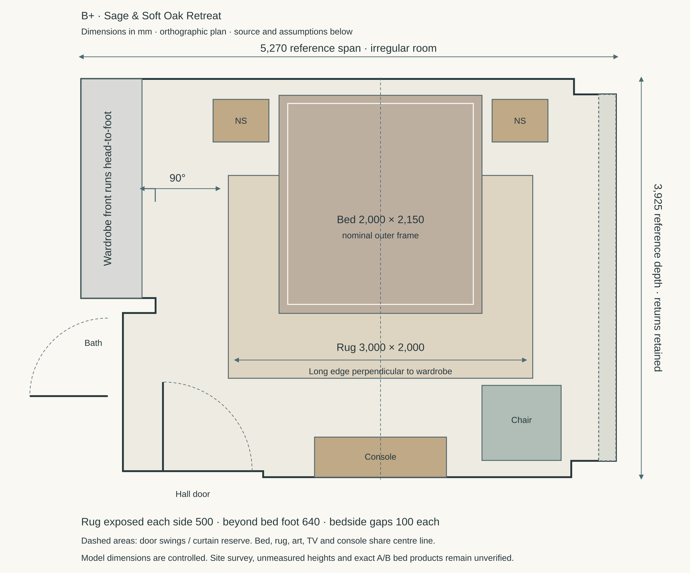
Rug exposure: 500 mm each side and 640 mm beyond the bed foot. Bed-foot to console: 1,220 mm.
| Item | Size | Basis / alignment |
|---|---|---|
| Rug · long edge across room | 3,000 × 2,000 mm | Perpendicular to wardrobe front |
| Bed · outer width × length × height | 2,000 × 2,150 × 1,100 mm | A/B nominal planning envelope; height assumed |
| Mattress | 1,828.8 × 1,981.2 × 50 mm | 50 mm thick; continuous flat support modelled |
| Each bedside | 550 × 420 × 600 mm | 100 mm gap from bed on each side |
| Reading chair | 780 × 740 × 830 mm | Faces bed; footprint stays square to walls |
| Console | 1,300 × 395 × 540 mm | Centred with bed and TV |
| TV · body width × depth × height | 1,668.1 × 77 × 957.8 mm | 75-inch Samsung; mounting elevation assumed |
| Artwork · width × height | 900 × 1,200 mm | Selected size; external frame detail unverified |
| Mirror · width × height | 400 × 800 mm | Projection assumed |
The native plan is irregular: 5,270 × 3,925 mm are reference spans, not a clear rectangular room. Door sweeps, wardrobe depth and window piers are retained. These views preserve the measured layout and furniture outer sizes; detailed product shapes, materials and bedding are illustrative. The bed-facing image is framed from inside the room. Use the plan to see the complete layout.
Read the measurement basis and assumptions · Download model dimensions (JSON)
Compare with the dimension-controlled technical views
The room, furniture outer sizes and placement are the same. The new views add cloth and furniture detail and use interior framing. These earlier technical views retain the full-layout cutaway; plans and dimension tables are unchanged.
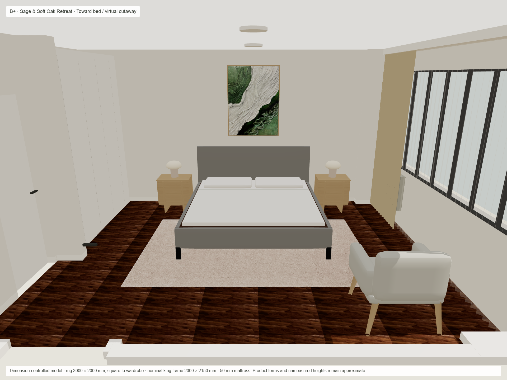
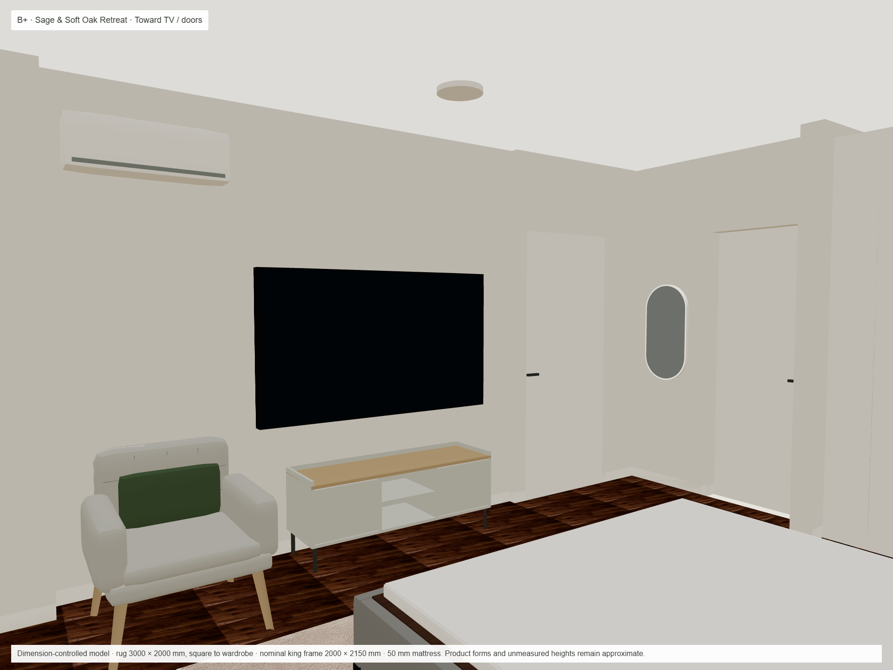
Previous A/B/C concept renders · approximate proportions
Earlier decorative concept images are preserved for style comparison. Use the model and dimensioned plan above for layout.
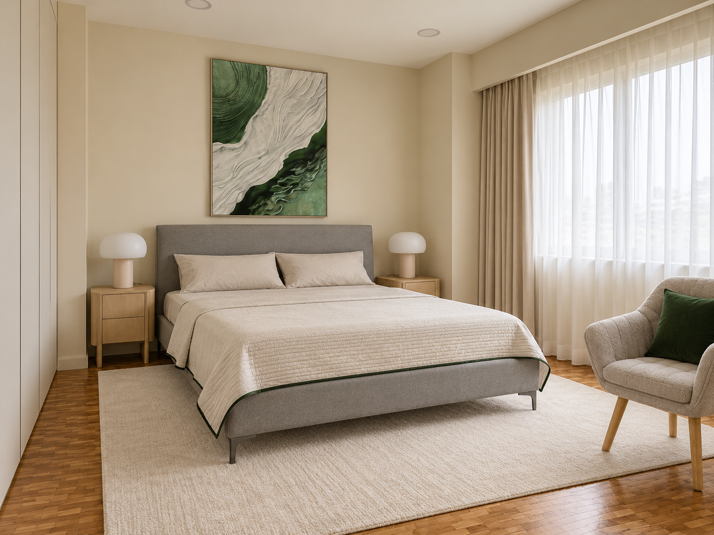
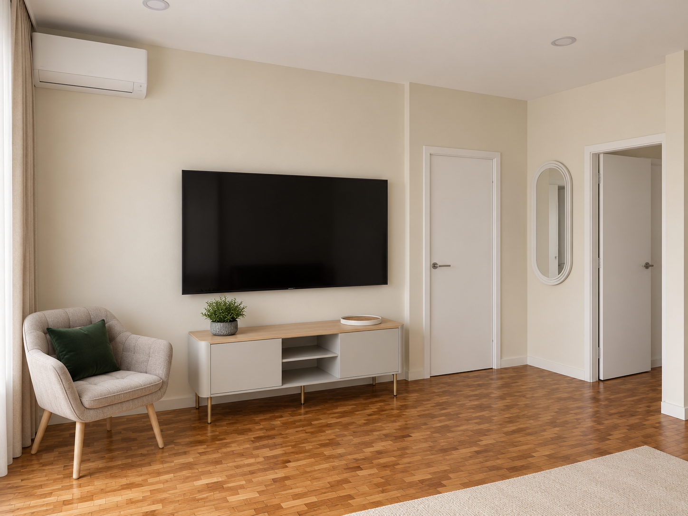
New textile colour and texture remain provisional: the added/replacement textile source photographs were not available for visual verification.
What changes
- Keep Seymour, Astrid, DEJSA, Matilda, Seoul and the original rug and art.
- Replace the dark-gray TRATTVIVA with white/beige VETEJORDFLY and its dark-green edge; this is polyester, not linen.
- Move the existing dark-green SANELA cushion to Matilda. Keep Jari at 40 × 80 cm and the installed ceiling fittings.
The palette
- Soft oak
- Sage
- Warm white
- Warm gray
Includes dated baseline items, carried curtains and new textiles; exact insert articles remain provisional where noted. Reserves are inherited estimates, not fresh quotations. See every item and price date ↗
Compare with the original B
Cream, Sage and Soft Oak. These original images were rejected and are retained here only to show the starting point.
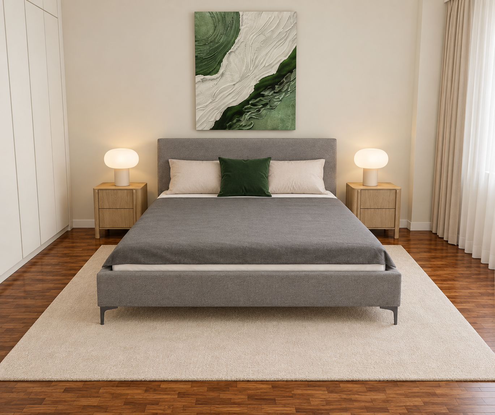
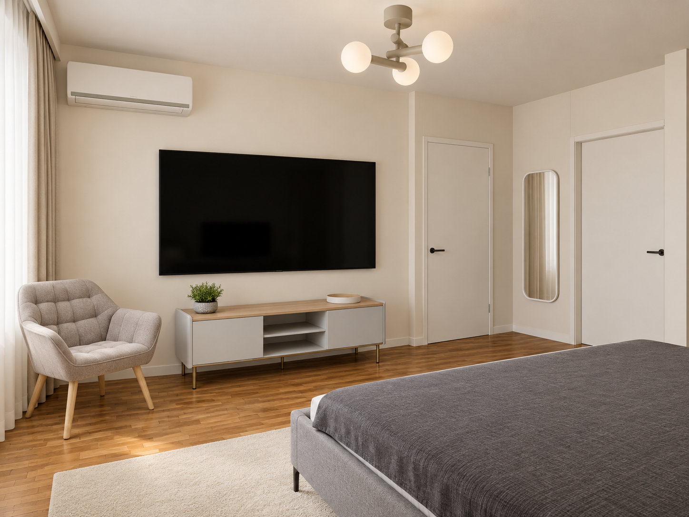
Products & source references
The revised schedule retains the original furniture, removes new ceiling fixtures and adjusts the textiles. The original supplier board shows the starting selections, including superseded ceiling fixtures and B’s previous bedspread.
- VETEJORDFLY bedspread, white/beige, 260x250 cm ↗Official-page price checked 21 October 2026; photo unavailable, colour/texture provisional, Cebu fulfillment unverified.
Direction C · a considered revision
Indigo & Oak Salon
Graphic dark outlines, indigo cloth and warm oak, balanced by one bright yellow accent at the chair.
Layout & dimensions
The rug’s long edge runs across the room at 90° to the wardrobe front. The bed, rug, artwork, TV and console share one centre line. Bedside gaps are 100 mm on both sides.
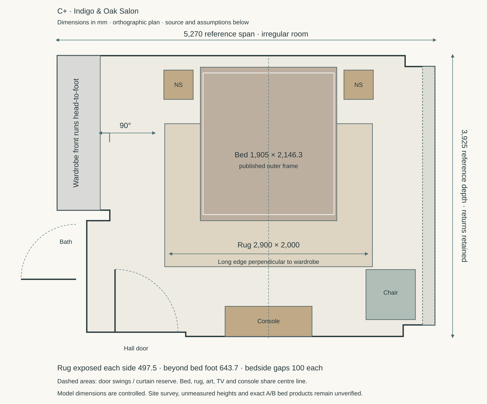
Rug exposure: 497.5 mm each side and 643.7 mm beyond the bed foot. Bed-foot to console: 1,197.7 mm.
| Item | Size | Basis / alignment |
|---|---|---|
| Rug · long edge across room | 2,900 × 2,000 mm | Perpendicular to wardrobe front |
| Bed · outer width × length × height | 1,905 × 2,146.3 × 1,244.6 mm | Published exterior; internal deck assumed |
| Mattress | 1,828.8 × 1,981.2 × 50 mm | 50 mm thick; continuous flat support modelled |
| Each bedside | 410 × 410 × 500 mm | 100 mm gap from bed on each side |
| Reading chair | 690 × 700 × 840 mm | Faces bed; footprint stays square to walls |
| Console | 1,214 × 421 × 451 mm | Centred with bed and TV |
| TV · body width × depth × height | 1,668.1 × 77 × 957.8 mm | 75-inch Samsung; mounting elevation assumed |
| Artwork · width × height | 300 × 400 mm | Selected size; external frame detail unverified |
| Mirror · width × height | 400 × 1,300 mm | Projection assumed |
The native plan is irregular: 5,270 × 3,925 mm are reference spans, not a clear rectangular room. Door sweeps, wardrobe depth and window piers are retained. These views preserve the measured layout and furniture outer sizes; detailed product shapes, materials and bedding are illustrative. The bed-facing image is framed from inside the room. Use the plan to see the complete layout.
Read the measurement basis and assumptions · Download model dimensions (JSON)
Compare with the dimension-controlled technical views
The room, furniture outer sizes and placement are the same. The new views add cloth and furniture detail and use interior framing. These earlier technical views retain the full-layout cutaway; plans and dimension tables are unchanged.
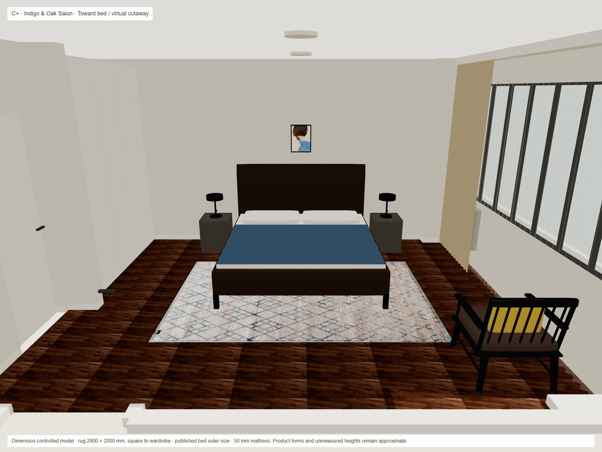
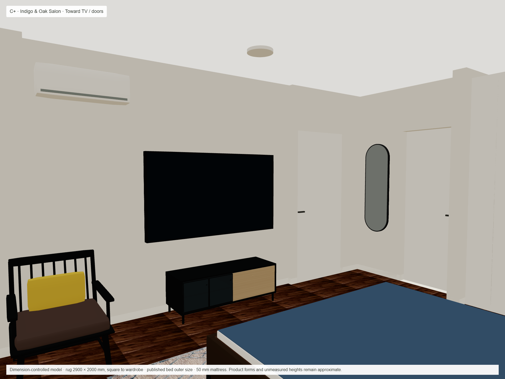
Previous A/B/C concept renders · approximate proportions
Earlier decorative concept images are preserved for style comparison. Use the model and dimensioned plan above for layout.
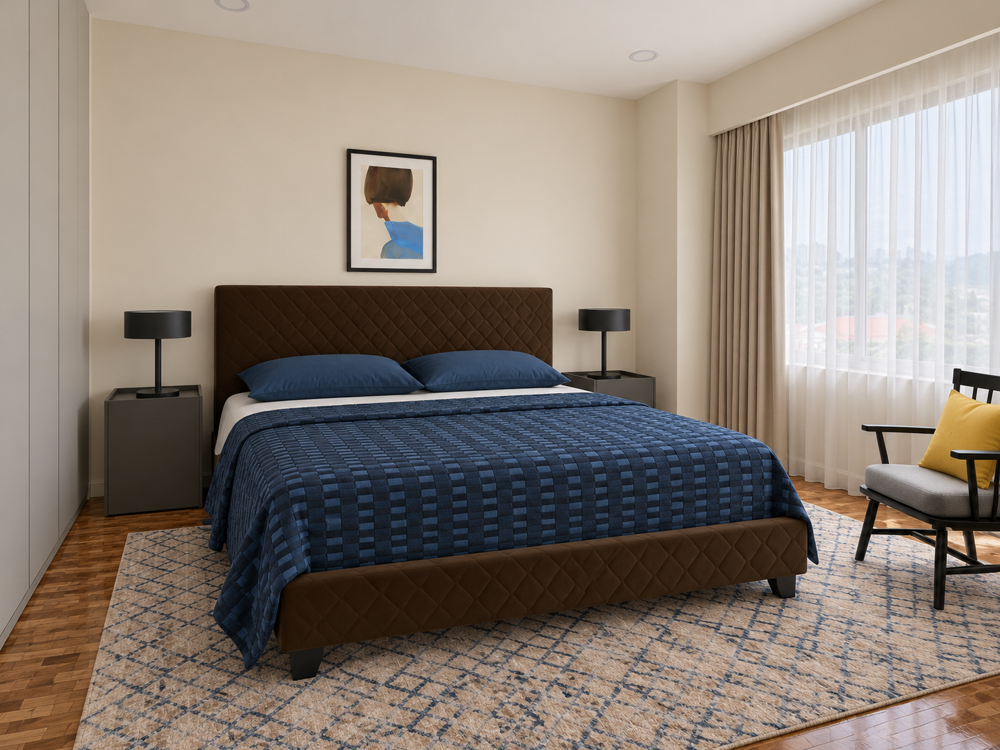
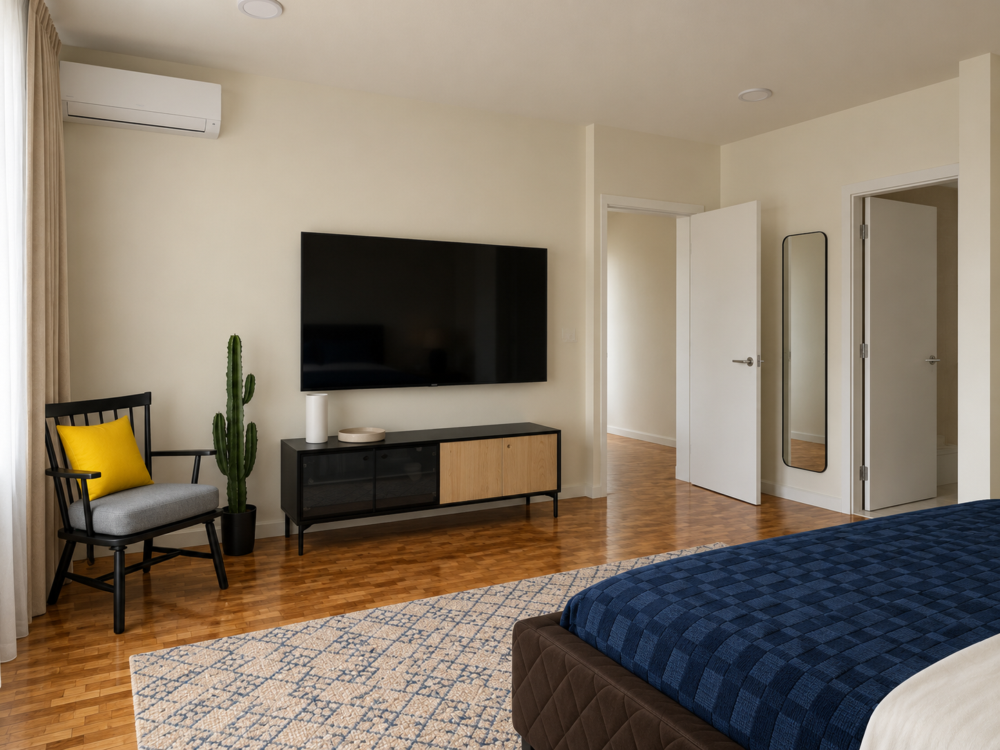
New textile colour and texture remain provisional: the added/replacement textile source photographs were not available for visual verification.
What changes
- Retain Lannister, PLÖJKER, NYMÅNE, PERSBOL, BOASTAD and the Metro Weave rug.
- Add one yellow GURLI cushion to PERSBOL. Fold back the blue SKOGSKOVALL to reveal the scheduled white sheet.
- Blue Cape is now modelled at its specified 30 × 40 cm. Retain the installed ceiling fittings.
The palette
- Indigo
- Oak
- Ink
- Yellow
Includes dated baseline items, carried curtains and new textiles; exact insert articles remain provisional where noted. Reserves are inherited estimates, not fresh quotations. See every item and price date ↗
Compare with the original C
Ink, Oak and Indigo. These original images were rejected and are retained here only to show the starting point.
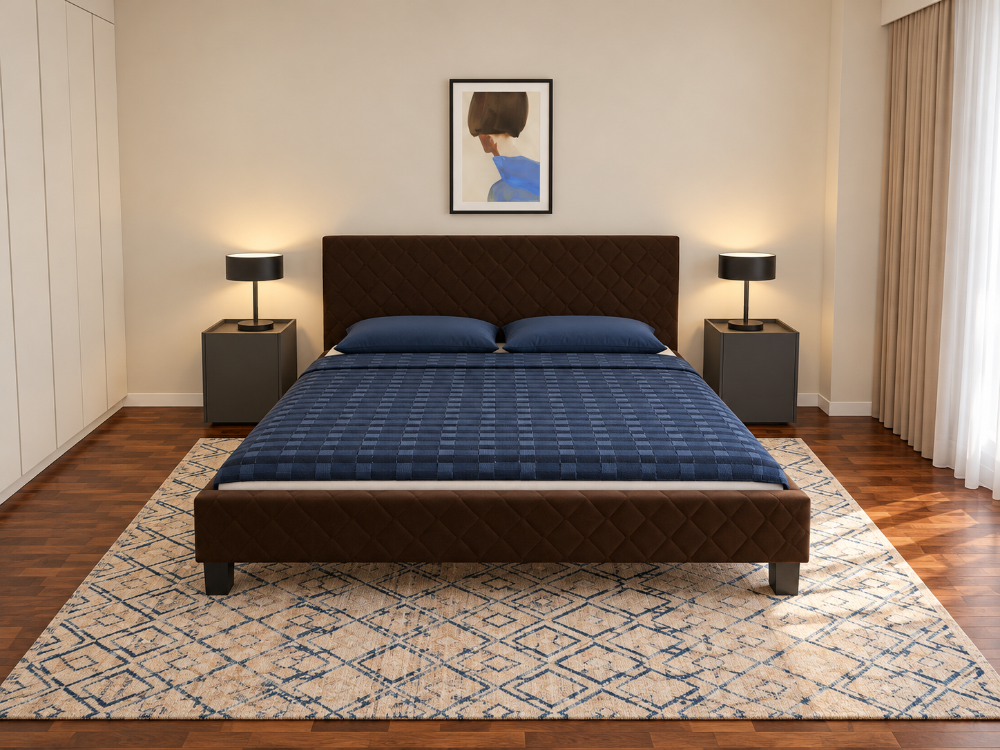
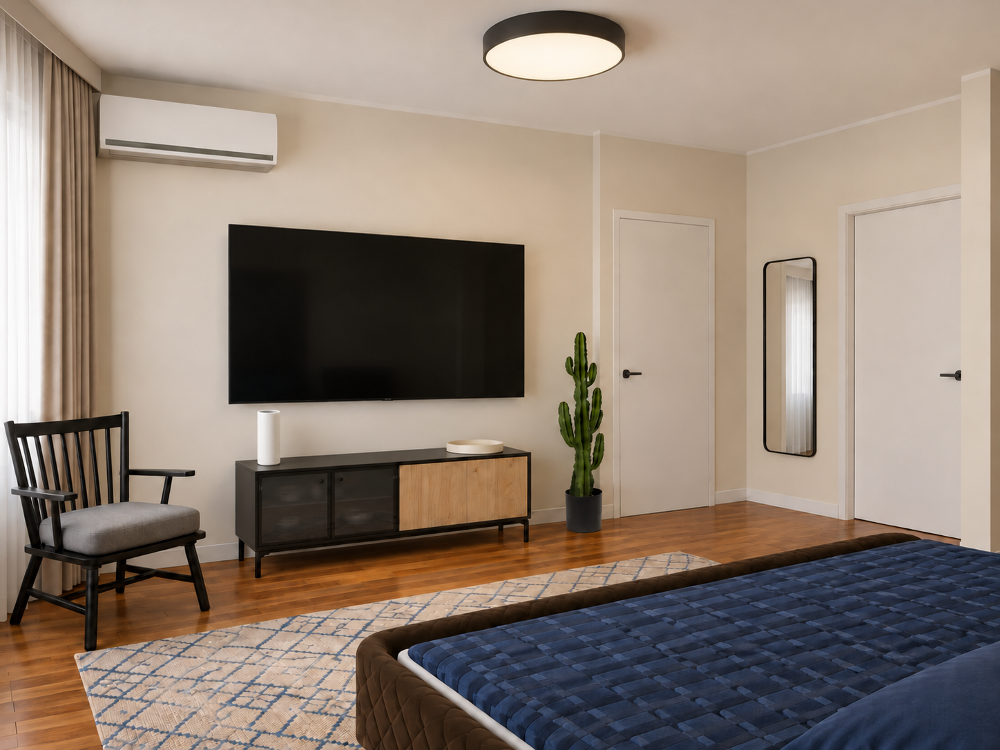
Products & source references
The revised schedule retains the original furniture, removes new ceiling fixtures and adjusts the textiles. The original supplier board shows the starting selections, including superseded ceiling fixtures and B’s previous bedspread.
- GURLI cushion cover, yellow, 50x50 cm ↗Official-page price checked 21 October 2026; photo unavailable, colour/texture provisional, Cebu fulfillment unverified.
What is measured, and what is assumed
The model follows the native dimensioned floor-plan outline, including its returns, wardrobe, two door swings and window piers. It is a drawing-based planning model, not a new physical site survey. Product dimensions combine saved supplier records and newly checked primary sources; the JSON lists each item’s evidence status.
- Controlled in the model: selected furniture envelopes, rug dimensions and orientation, centred bed/rug/TV wall, paired 100 mm bedside gaps and a 50 mm mattress.
- Nominal A/B beds: 2,000 × 2,150 mm outer envelopes, as authorised using a nominal king layout. This is a planning assumption, not a universal king-frame standard or verified Gregory/Seymour product size. A/B headboard heights are assumed at 1,000 / 1,100 mm.
- Vertical and fitted details: ceiling 2,700 mm; wardrobe 2,600 mm; window sill/head 900 / 2,350 mm; deck top 450 mm; curtain reserve 170 mm. These dimensions, detailed product shapes and internal supports require confirmation. C’s published exterior does not verify a custom 50 mm mattress installation.
- AC and wall fittings: the AC uses a provisional 790 × 192 × 275 mm body, positioned clear of the window pier; installed dimensions, mounting, service and airflow clearances remain unverified. TV elevation, mirror projection and outside art-frame dimensions also need confirmation.
- View conventions: the bed-facing camera looks diagonally across the room at a 1,650 mm eye height with a 78° horizontal field of view. The TV-facing camera retains its 70° horizontal field of view. Both show the same full room model; normal camera framing can crop items. Soft bedding, rounded furniture detail and surface finishes do not change measured footprints or positions. The 50 mm mattress remains separate from the fuller pillows and duvet.
Model checks cover rug/wardrobe perpendicularity, furniture bounds, room obstructions and the complete door sweeps. They do not certify installation, access for maintenance, open wardrobe doors/drawers or current supplier stock. Dimensions and source references (JSON) · Native render provenance (JSON).